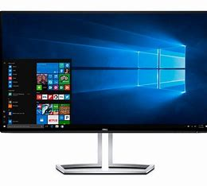

| Componente de la computadora |
|---|
Monitor El Monitor es un dispositivo electrónico de salida de la computadora en el que se muestran las imágenes y textos generados por medio de un adaptador gráfico o de video.El término monitor se refiere normalmente a la pantalla de vídeo, y su función principal y única es la de permitir al usuario interactuar con la computadora. Una computadora típica presenta un monitor con tecnología CRT , la misma que emplean los televisores sin embargo hoy en día existe la tecnología TFT que reduce significativamente el volumen de los monitores. |